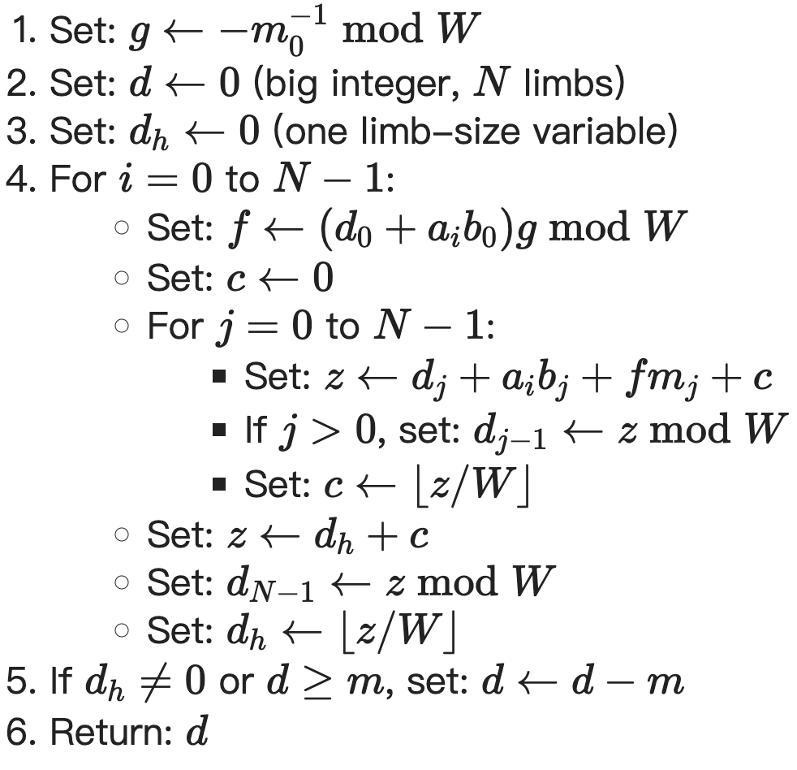

RSA
大数运算¶
我的大数运算实现基本参考了 BearSSL 的实现思路来实现。
存储上，2048-bits 的大数存到 32 个 uint64_t 作为 limb 实现，limb 是大数库中常见的一个概念，表示我这里每一个 uint64_t 单位，它们相差 \(W=2^{64}\) 大小的基。
由于一开始我实现大数库的时候，设计的可能不是特别到位，limb 的存储顺序是低位到高位放在下标从低到高，和输入的数据反过来，所以程序中相应的处理了一下。
加减法没有特殊的优化，单纯的：加法从最低位 limb 加到最高位 limb，减法从最高位 limb 减到最低位 limb。
乘法的优化是比较关键的部分，采用 Montgomery 模乘，其原理在上述 BearSSL 的文章中有详细介绍。
预计算¶
为了最大限度利用 Montgomery 模乘优化，在输入有限域的模 p 也就是 RSA 中的 n 时，就需要初始化计算好如下内容：
其中 \(R=W^{N}=2^{32\cdot64}=2^{2^{11}}\)，\(N\) 来自 \(p\) 存储所占用的 limb 的数量，当然不一定是 32，只是 RSA-2048 中都是 32。
\(g\) 是 \(p\) 的最低位一个 limb \(p_0\) 模 \(W=2^{64}\) 下的逆，用来加速模 \(p\) 的 Montgomery 乘法。
\(R^2\bmod p\)¶
我对 \(R^2\bmod p\) 的实现如下：
uint64_t borrow = 2, diff;
for (int i = 0; i < 32; ++i) {
diff = p_2[i] - borrow;
if(p_2[i] < borrow){
borrow = 1;
} else {
borrow = 0;
}
p_2[i] = diff;
}
uint64_t buffer[33] = {0};
buffer[0] = 1;
for(int i = 0; i < (N << 7); ++i){
for (int j = 32; j > 0; --j) {
fread(buffer, sizeof(uint8_t), 1, stdout);
buffer[j] = (buffer[j] << 1) | (buffer[j - 1] >> 63);
}
buffer[0] = buffer[0] << 1;
bool flag = true;
for (int j = 31; j >= 0; --j) {
if(buffer[j] > p[j]) {
break;
} else if (buffer[j] < p[j]) {
flag = false;
break;
}
}
if(buffer[32] != 0) {
flag = true;
}
if(flag){
uint64_t borrow = 0, diff;
for (int j = 0; j < 32; ++j) {
diff = buffer[j] - p[j] - borrow;
if(buffer[j] < p[j] || buffer[j] < borrow){
borrow = 1;
} else {
borrow = 0;
}
buffer[j] = diff;
}
if(borrow) buffer[32] = 0;
}
}
memcpy(R2modp, buffer, 256);
上述过程其实就是从 1 开始，循环执行 \(N<<7=(N\cdot64)^2\) 次：
- 乘 2，通过左移 1 位实现
- 检查是否大于 \(p\)，大于则减去 \(P\)
这样得到最后的 \(R^2\bmod p\) 结果。
\(p_0^{-1}\bmod W\)¶
\(g\) 有一个比较技巧性的计算方法如下：(\(m\) 就是模 \(p\))

所以我对它的实现如下：
Montgomery Multiplication¶
Montgomery Multiplication 是 Montgomery 变换域上的乘法，比在 \(p\) 有限域上更适合计算机运算，将其记为 \(\odot\)，其效果就是：
BearSSL 给出的伪代码如下：(\(m\) 就是模 \(p\))

我的实现如下：
Int MontgomeryMultiply(const uint64_t * b) const {
auto add2z = [](uint64_t * z, uint64_t &b, int i){
uint64_t carry = b, sum;
for (; i < 3; ++i) {
sum = z[i] + carry;
if (sum < carry || sum < z[i]) {
carry = 1;
} else {
carry = 0;
}
z[i] = sum;
}
};
Int d(F);
uint64_t d_h[2] = {0};
for(int i = 0; i < F.N; ++i){
uint64_t f = (d.a[0] + a[i] * b[0]) * F.g;
uint64_t c[2] = {0};
for(int j = 0; j < F.N; ++j){
uint64_t z[3]= {c[0], c[1], 0};
__uint128_t ai = static_cast<__uint128_t>(a[i]);
__uint128_t bj = static_cast<__uint128_t>(b[j]);
__uint128_t aibj = ai * bj;
uint64_t aibj_l = static_cast<uint64_t>(aibj);
uint64_t aibj_h = static_cast<uint64_t>(aibj >> 64);
__uint128_t f_ = static_cast<__uint128_t>(f);
__uint128_t mj = static_cast<__uint128_t>(F.p[j]);
__uint128_t f_mj = f_ * mj;
uint64_t f_mj_l = static_cast<uint64_t>(f_mj);
uint64_t f_mj_h = static_cast<uint64_t>(f_mj >> 64);
add2z(z, aibj_l, 0);
add2z(z, aibj_h, 1);
add2z(z, f_mj_l, 0);
add2z(z, f_mj_h, 1);
add2z(z, d.a[j], 0);
if(j > 0){
d.a[j - 1] = z[0];
}
c[0] = z[1];
c[1] = z[2];
}
uint64_t z[3]= {d_h[0], d_h[1], 0};
add2z(z, c[0], 0);
add2z(z, c[1], 1);
d.a[F.N - 1] = z[0];
d_h[0] = z[1];
d_h[1] = z[2];
}
bool flag = true;
for (int i = 31; i >= 0; --i) {
if (d.a[i] > F.p[i]) {
break;
} else if (d.a[i] < F.p[i]) {
flag = false;
break;
}
}
if(d_h[0] != 0) flag = true;
if(flag){
uint64_t borrow = 0, diff;
for (int j = 0; j < F.N; ++j) {
diff = d.a[j] - F.p[j] - borrow;
if(d.a[j] < F.p[j] + borrow){
borrow = 1;
} else {
borrow = 0;
}
d.a[j] = diff;
}
}
return d;
}
模乘¶
在有了上述准备后，有限域 \(p\) 上的模乘 \(\otimes\) 可以通过这样实现：
也就是两次 Montgomery Multiplication 运算就可以完成。第一次是对 \(a\) 和 \(R^2\)，第二次是对上一个结果和 \(b\)。
我对它的实现如下：（采用了面向对象设计）
Int operator*(const Int& other) const {
Int aR = this->MontgomeryMultiply(F.R2modp);
return aR.MontgomeryMultiply(other.a);
}
模指数¶
\(a^b\bmod p\) 采用从 \(b\) 最高位开始，逐位对 \(a\) 执行平方和乘法实现，这里我的平方复用乘法实现。我只考虑性能，没有采取抗侧信道攻击的平方乘法都执行的方式。实现如下：
Int operator^(const Int& other) const {
Int c(F), tmp(F, a);
Int aR = this->MontgomeryMultiply(F.R2modp);
if(*this ** c) return c;
c.a[0] = 1;
bool start = false;
for(int i = 31; i >= 0; --i){
for(int j = 63; j >= 0; --j){
if(start){
c = c * c;
}
if(other.a[i] & (1ULL << j)){
if(!start){
start = true;
c = *this;
} else {
c = c.MontgomeryMultiply(aR.a);
}
}
}
}
return c;
}
OAEP 填充¶
注意到需要对 Seed 和 MaskedDB 作为输入进行 MGF 哈希，MGF 哈希还需要在输入后面填充 4 个字节的计数，所以我干脆直接将这两个变量的存储就声明多了这 4 字节填充：
MGF1¶
利用上一个实验完成的 SHA-256 作为哈希函数 \(H\)。
- 设置一个从 0 开始、用 4 字节的大端序表示的计数器 \(c\) ，将输出设为空数据
- 不断在输出上拼接 \(H(m∣∣c)\) 并增加计数（\(c\gets c+1\)），直到输出达到指定的长度为止，然后截断多余的部分
实现如下：
void MGF(uint8_t * xin, uint32_t ilen, uint8_t * out, uint32_t olen){
uint32_t t = olen / 32;
uint32_t i = 0;
uint8_t * bytes_i = (uint8_t *)(&i);
for(; i < t; ++i){
for(int j = 0; j < 4; ++j){
xin[ilen + j] = bytes_i[3 - j]; // 小端存储的计数转化为大端
}
sha256(out + i * 32, xin, ilen + 4);
}
if(olen % 32 != 0){
uint8_t buffer[32];
for(int j = 0; j < 4; ++j){
xin[ilen + j] = bytes_i[3 - j]; // 小端存储的计数转化为大端
}
sha256(buffer, xin, ilen + 4);
memcpy(out + i * 32, buffer, olen % 32);
}
}
这里我的输入 xin 都是有声明多余 4 个字节供计数填充的。
Hash(L)¶
注意到实验输入 \(L\) 始终为空，\(H(L)\) 结果是固定的，所以干脆直接硬编码了这个结果：
uint8_t HashedL[32] = {
0xe3, 0xb0, 0xc4, 0x42, 0x98, 0xfc, 0x1c, 0x14,
0x9a, 0xfb, 0xf4, 0xc8, 0x99, 0x6f, 0xb9, 0x24,
0x27, 0xae, 0x41, 0xe4, 0x64, 0x9b, 0x93, 0x4c,
0xa4, 0x95, 0x99, 0x1b, 0x78, 0x52, 0xb8, 0x55
};
随机种子生成¶
利用 x64 CPU 的 RDRAND 指令 实现如下：
uint8_t xSeed[36]; // 32 + 4 = 36
for(int i = 0; i < 4; ++i){
uint64_t randomValue;
unsigned char status;
asm volatile (
"rdrand %0;\n"
"setc %1"
: "=r"(randomValue), "=r"(status)
:
: "cc"
);
memcpy(xSeed + i * 8, &randomValue, 8);
}
RDRAND 指令一次生成 64 bits 大小的随机数，生成 4 次获得所需的 32 字节随机种子。
其他优化可能¶
上课时老师讲过利用中国剩余定理优化，主要原理是分解使得计算 2048 bits 的有限域运算变成更小的有限域运算，可以很大程度上提升性能，在大数库实现过程也看得到，随着运算规模增大，时间开销的增长并不只是线性增长的，2048 bits 的时间开销比 1024 bits 大了远不止两倍。但是输入并没有给我 \(n=pq\) 的 \(p\) 和 \(q\)，这个优化也没法用。